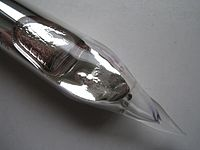

Numero atomico: 37
Massa atomica: 85,47
Temperatura di fusione (°C): 39
Temperatura di ebolizione (°C): 686
Energia di prima ionizzazione (kj/mol): 403
Elettronegatività (secondo Pauling): 0,82
Densità: 1,53
Numeri di ossidazione: +1
Configurazione elettronica: 1s2, 2s2, 2p6, 3s2, 3p6, 3d10, 4s2, 4p6, 5s1
Maggiori Informazioni